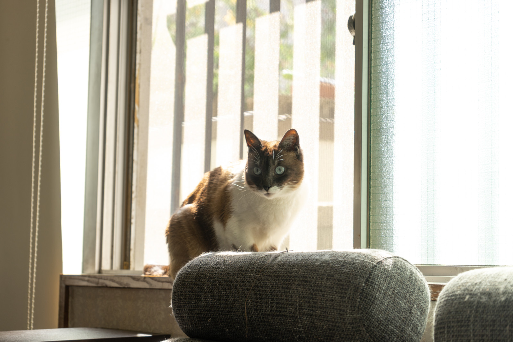
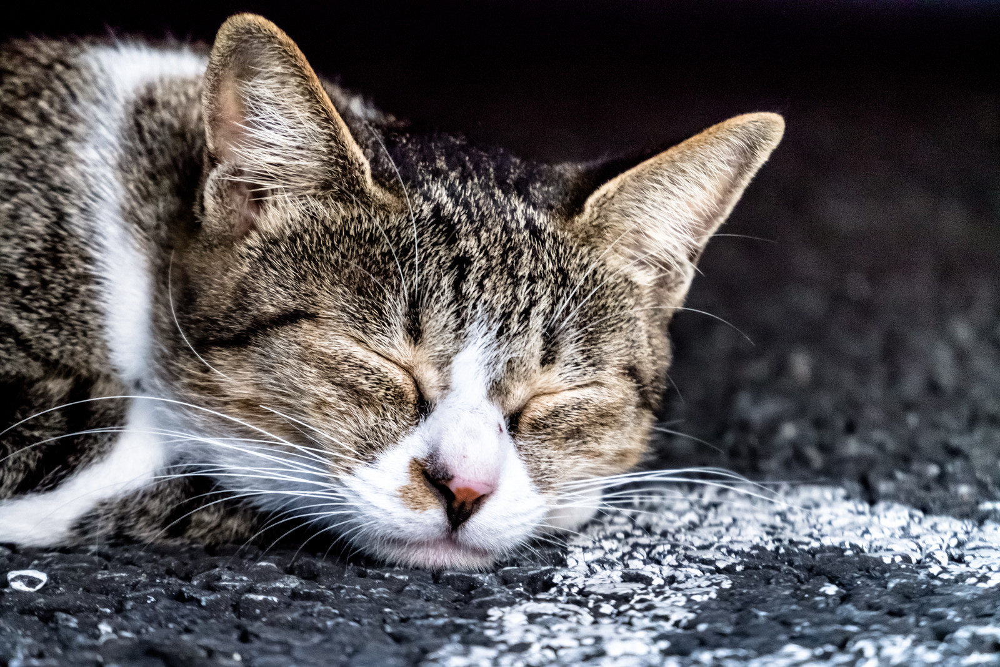
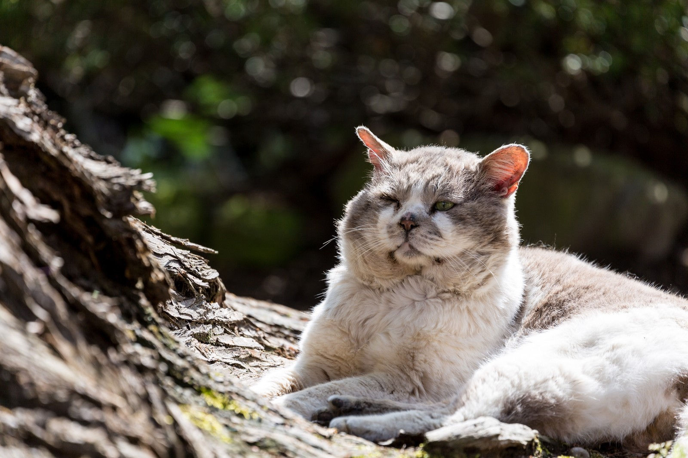
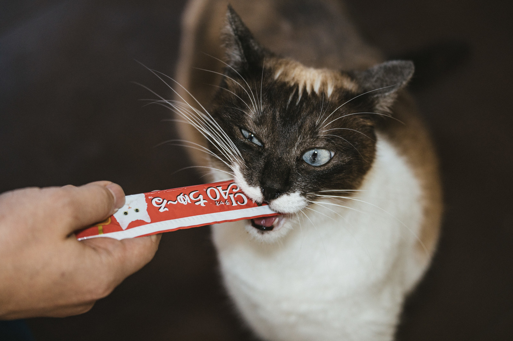

猫とは
ネコ（猫）は、狭義には食肉目ネコ科ネコ属に分類されるヨーロッパヤマネコが
家畜化されたイエネコ（家猫、Felis silvestris catus）に対する通称。
何はともあれ、とても可愛いのである。
かわいい猫の参考画像
 
ちゅ～る 広告

PC相談
ネコ（猫）は、狭義には食肉目ネコ科ネコ属に分類されるヨーロッパヤマネコが
家畜化されたイエネコ（家猫、Felis silvestris catus）に対する通称。
何はともあれ、とても可愛いのである。